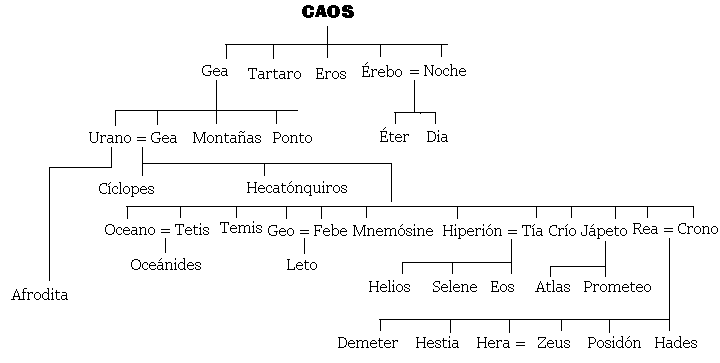

🏺 UD3 · Mitoloxía e Relixión: deuses, heroes e pervivencia¶
Obxectivos da unidade
- Comprender que é un mito e cal é a súa función nunha sociedade pre-científica.
- Explicar a cosmogonía e teogonía gregas: Caos → Xea → Urano → Titáns → Olímpicos.
- Coñecer os principais deuses olímpicos, os heroes e os mitos fundamentais.
- Identificar procedencias, temas, estruturas e valores transmitidos polo mito.
- Analizar a pervivencia da mitoloxía na cultura actual (cómic, cine, música, marcas, política…).
- Crear un produto final: díptico “mito onte / mito hoxe”.
1. Que é a mitoloxía?¶
A mitoloxía é o conxunto de narracións tradicionais coas que unha sociedade explica o mundo, a orixe da vida, os fenómenos naturais, a convivencia humana e a súa relación co sagrado. Nun tempo sen ciencia nin métodos experimentais, o mito constituía unha forma seria e eficaz de coñecemento: unha maneira simbólica de ordenar o descoñecido, de dar sentido ao que non tiña explicación inmediata.
Os mitos cumprían funcións moi diversas:
- Explicativa: respondían á pregunta pola orixe do cosmos, dos deuses e da humanidade.
- Social: transmitían modelos de comportamento (hospitalidade, moderación, valentía) e advertían contra as condutas perigosas.
- Relixiosa: estruturaban rituais, festas e cultos; explicaban por que se honra un deus e como debe facerse.
- Identitaria: cada comunidade recoñecíase nun conxunto propio de deuses, heroes e lendas.
- Educativa: ofrecían exemplos e anti-exemplos, configurando unha ética colectiva.
- Estética e cultural: alimentaban a literatura, a arte, o teatro e a imaxinación do pobo grego.
É importante subliñar que os gregos non eran inxenuos nin “crían literalmente” cada relato tal como o contamos hoxe. Sabían que existían distintas versións dun mesmo mito, reinterpretábano constantemente e utilizábano como linguaxe simbólica para pensar cuestións profundas: o poder, a xustiza, o destino, o paso do tempo, a violencia ou a fragilidade humana.
Por iso dicimos que o mito non é un conto infantil, senón unha forma primitiva pero sofisticada de filosofía narrada. Igual que hoxe empregamos películas, novelas ou series para expresar ideas complexas, os gregos utilizaban o mito para dotar de sentido á súa experiencia e á do seu pobo.
Os mitos pódense clasificar segundo o que explican:
- Mitos cosmogónicos – Explican a creación e a orixe do universo (ex.: Hesíodo, Caos → Xea → Urano).
- Mitos teogónicos – Tratan sobre a orixe e xeración dos deuses (ex.: Urano, Xea e os Titáns).
- Mitos antropoxénicos – Explican a orixe do ser humano (ex.: Prometeo modelando aos homes).
- Mitos etiolóxicos – Relatan a orixe de institucións, cultos ou fenómenos sociais (ex.: o mito de Deméter e Perséfone para explicar as estacións).
- Mitos escatolóxicos – Tratan sobre o destino da alma despois da morte (ex.: o xuízo das almas no Hades).
- Mitos morais – Abordan cuestións éticas sobre o ben, o mal ou a xustiza divina (ex.: Castigos de Sísifo ou Tántalo).
2. Cosmogonía e teogonía: de onde vén todo?¶
As fontes principais son Hesíodo (Teogonía, s. VIII a.n.e.) e a tradición épica arcaica.

2.1 Cosmogonía: a creación do mundo¶
Segundo Hesíodo:
-
Caos → baleiro inicial, fenda primixenia. De Caos xorden:
- Érebo (escuridade fonda)
- Nix (noite)
-
Da unión de Nix e Érebo nacen:
- Éter (luz superior)
- Hemera (día)
-
Xea (Terra) → fundamento firme da vida. De Xea (sen concepción) nacen:
- Urano (ceo estrellado)
- As Montañas
- O Ponto (mar)
-
Tártaro → profundidade subterránea.
- Eros → forza do amor, que une e permite crear.

A cosmogonía grega é un proceso de ordeación progresiva: do baleiro → luz → terra → ceo → vida.
2.2 Teogonía: nacemento dos deuses¶
De Xea e Urano nacen os Titáns, os Cíclopes e os Hecatónquiros.
Os Titáns principais¶
- Océano e Tetis (augas do mundo)
- Hiperión, Tea, Selene, Helios, Eos
- Rea e Cronos
- Temis, Mnemósine, Febe, Xápeto, Ceo, Crío
Urano odiaba os seus fillos máis monstruosos e impedía que nacesen. Xea, farta, preparou unha fouce e pediu axuda. Só Cronos se atreveu a actuar: castrou a Urano e iniciou a era dos Titáns.
Do sangue caído sobre Xea naceron:
- As Erinias
- Os Xigantes
- As Ninfas Melias
Dos xenitais arroxados ao mar naceu Afrodita.

2.3 A titanomaquia¶
Cronos gobernou, pero temía unha profecía: sería destronado polo seu propio fillo. Para evitalo, tragaba aos seus fillos a medida que nacían. Pero Rea, desesperada, ocultou ao último: Zeus.
Zeus creceu en Creta e, ao facerse forte, obrigou a Cronos a vomitar os seus irmáns. Comezou así a guerra entre Titáns e Olímpicos:
- Olímpicos: Zeus, Hera, Hestia, Deméter, Poseidón, Hades.
- Aliados: Cíclopes (que lle deron a Zeus o raio), Hecatónquiros.
A vitoria de Zeus marcou o inicio da orde olímpica e o establecemento dun cosmos organizado baixo o seu mando.
2.4 Antropogonía: a creación da humanidade¶
A mitoloxía grega ofrece varias explicacións sobre a orixe dos seres humanos. As máis destacadas son:
- Prometeo e Epimeteo (Hesíodo): o ser humano recibe o lume e a técnica para sobrevivir.
- As cinco idades da humanidade (Hesíodo): visión histórica e moral da degradación humana.
- Tradición órfica: os humanos nacen da mestura de Titáns (violencia) e Dioniso (divindade).
Estas historias non buscan describir un feito histórico, senón reflexionar sobre a condición humana: debilidade, creatividade, soberbia, sufrimento, esperanza.
3. Os deuses olímpicos¶
A seguinte táboa resume os principais olímpicos, o seu dominio e atributos.
| Deus/Deusa | Dominio | Atributos |
|---|---|---|
| Zeus | ceo, orde, xustiza | raio, aguia |
| Hera | matrimonio | pavo real, coroa |
| Posidón | mar, terremotos | tridente |
| Deméter | agricultura | espigas |
| Atenea | sabedoría, estratexia | casco, oliva, curuxa |
| Apolo | luz, música, profecía | lira, arco |
| Ártemis | caza, natureza | arco, corzo |
| Ares | guerra | lanza, escudo |
| Afrodita | amor, beleza | cuncha, pomba |
| Hefesto | lume, artesanía | martelo, forno |
| Hermes | mensaxeiro, comercio | caduceo, sandalias aladas |
| Dioniso | viño, teatro | tirso, vide |
4. Heroes e heroínas¶
Os heroes representan valores, conflitos e límites da condición humana. Non son perfectos, senón paradigmas morais.
Heroes principais¶
- Heracles → esforzo, superación do trauma.
- Perseo → coraxe e intelixencia (Medusa).
- Teseo → orde e civilización (Minotauro).
- Ulises / Odiseo → astucia, resistencia, identidade.
- Aquiles → honra, ira, destino.
- Xasón e os Argonautas → aventura e fracaso político.
Heroínas e deusas heroicas¶
- Atalanta, corredora invencible.
- Penélope, fidelidade e intelixencia.
- Medea, conflito cultural e vinganza.
- Antígona, ética persoal vs. lei do Estado.
5. A función social do mito¶
O mito serve como:
- Modelo moral: o que se debe e non se debe facer.
- Explicación do mundo: por que hai mar, lume, estacións…
- Control social: castigos divinos, límites, leis implícitas.
- Xustificación política: orixes divinas das cidades.
- Identidade colectiva: cada polis ten un fundador heroico.
- Base da relixión: os mitos conectan con rituais e festas.
6. Relixión grega: como se relacionaban cos deuses?¶
A relixión grega era:
- Politeísta: moitos deuses con dominios distintos.
- Ritualista: máis importante o rito que a crenza interior.
- Cívica: a comunidade organizaba cultos e festas.
- Antropomórfica: os deuses teñen forma e comportamento humano.
- Sincrética: as polis compartían deuses pero con cultos locais.
Prácticas relixiosas¶
- Sacrificios e banquetes rituais.
- Festas (Panateneas, Dionisias…).
- Oráculos (Delfos, Dódona).
- Purificacións.
- Votos, procesións, competicións deportivas (Xogos Olímpicos).
7. A mitoloxía na cultura romana¶
Roma non copia, senón que adapta:
- Zeus → Xúpiter
- Hera → Xuno
- Poseidón → Neptuno
- Afrodita → Venus
- Ares → Marte
- Hermes → Mercurio
- Atenea → Minerva
Roma enfatiza:
- o carácter moral e exemplar dos deuses,
- a idea de disciplina,
- o poder do Estado como vontade divina.
8. Pervivencia do mito: onde aparece hoxe?¶
O mito segue vivo porque seguimos precisando símbolos, relatos e personaxes arquétipos.
Onde aparece?¶
- Publicidade: Nike (deusa da vitoria), Versace (Medusa), Starbucks (sereas).
- Cine: Marvel (Thor, Loki), Troia, Percy Jackson.
- Música: Rosalía (Caronte, mito do paso), Anier (Medusa).
- Videoxogos: Hades, God of War, Assassin’s Creed.
- Política: uso simbólico do Olimpo, do titán, do labirinto.
- Linguaxe común: “talón de Aquiles”, “abrir a caixa de Pandora”, “traballo titánico”.
O mito funciona como linguaxe universal para expresar emocións, conflitos e ideas.
9. Actividades da unidade¶
1. Liña do tempo de creación¶
Comparar:
- Cosmogonía grega
- Xénese bíblico
- Cosmogonías nórdicas / sumerias
- Big Bang
2. Mapa olímpico¶
Crear un mapa da Grecia clásica onde situar:
- Santuarios
- Cidades asociadas a cada deus
- Mitos locais
3. Lectura de textos¶
- Hesíodo, Teogonía (selección).
- Homero, Odisea (episodios de deuses e monstros).
4. Análise de obras de arte¶
- Botticelli: Nacemento de Venus.
- Goya: Saturno devorando o seu fillo.
- Vasari: Castración de Urano.
5. Creación final: Díptico Mito Onte / Mito Hoxe¶
Cada alumno escolle un mito e crea un díptico:
- Panel 1 → obra clásica (cerámica, escultura, texto).
- Panel 2 → pervivencia actual (cómic, película, canción, logo).
- Pequena explicación textual.
10. Lembranza final¶
✨ O mito non desaparece: transfórmase. Seguimos usando historias antigas para explicar os nosos medos, desexos e conflitos. Por iso a mitoloxía grega segue viva hoxe.